Deep Learning Basics
Neurons, loss and cost, and the common activation functions, explained from first principles.
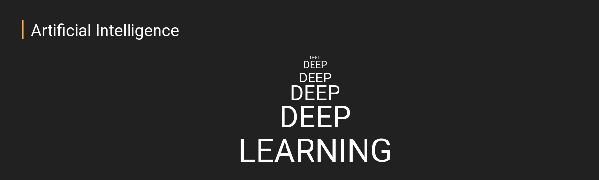
In this article, we'll start explaining the important basics in deep learning
A neural network tries to represent a given output based on its inputs by learning the appropaite parameters that could map the input to the target output.
In real life the relation between output and input are not a linear relation, but a non-linear complex one. This force us to choose methods that introduce this non-linearity, these methods are called activation functions.
Table of Content
Neural Network
A neural network is a machine learning model that is inspired by the human brain. It is made up of interconnected nodes, called neurons, that are arranged in layers.
The first layer is called the input layer, and it receives the data that the network will process. The last layer is called the output layer, and it produces the network's output. The layers in between are called hidden layers.
The neurons in each layer are connected to the neurons in the next layer. The connections between neurons are called synapses. The strength of each synapse is determined by a weight.
The network learns by adjusting the weights of the synapses. This is done through a process called backpropagation. Backpropagation is an algorithm that calculates the error of the network's output and then adjusts the weights to reduce the error.
The more the network is trained, the better it will become at predicting the output for a given input.
So Let's define a deep network to be :
DEEP Networks are gigantic Non-Linear or implicit sophisticated look-up table.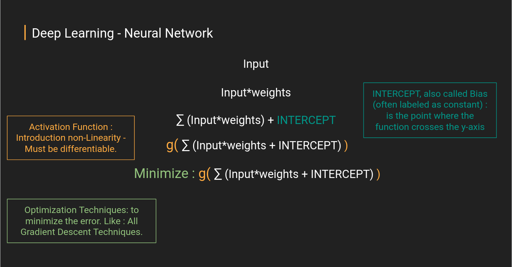
Here are some of the key features of a neural network:
- Non-linearity: Neural networks are able to learn non-linear relationships between the input and output data. This is because the activation functions used in neural networks are non-linear.
- Parallel processing: Neural networks can process data in parallel. This means that the network can learn from multiple data points at the same time.
- Adaptability: Neural networks are able to adapt to new data. This is because the weights of the synapses can be adjusted to improve the network's performance.
- Generalization: Neural networks are able to generalize to new data. This means that the network can learn from a limited amount of data and then apply the knowledge to new data that it has not seen before.
Neural networks are a powerful tool that can be used for a variety of tasks, including:
- Classification: Neural networks can be used to classify data into different categories. For example, a neural network can be used to classify images into different objects or to classify text into different categories.
- Regression: Neural networks can be used to predict a continuous value, such as the price of a stock or the number of sales.
- Natural language processing: Neural networks can be used to process natural language, such as text and speech. For example, a neural network can be used to translate text from one language to another or to generate text.
- Computer vision: Neural networks can be used to process images and videos. For example, a neural network can be used to identify objects in an image or to track the movement of people in a video.
Neural networks are a rapidly growing field of machine learning. As the technology continues to develop, neural networks will be able to solve even more complex problems.
Note: Number of layers = number of hidden layers + 1
Loss functions Vs Cost function
The loss function computes the error for a single training example; The Cost function is the average of the loss functions of the entire training set.
Removing INTERCEPT?
Let's reacall a real linear regression line: y = a + b*x + Error, where
- a: INTERCEPT.
- Error: they are the residuals which are normally distributed.
Assume removing the intercept, then the line will go through the origin wherein the dependent variable and the independent variable is equal to zero.
Activation Function
An activation function is a function that is applied to the output of a neuron in a neural network. It is used to introduce non-linearity into the network, which is essential for learning complex patterns.
Linear Function
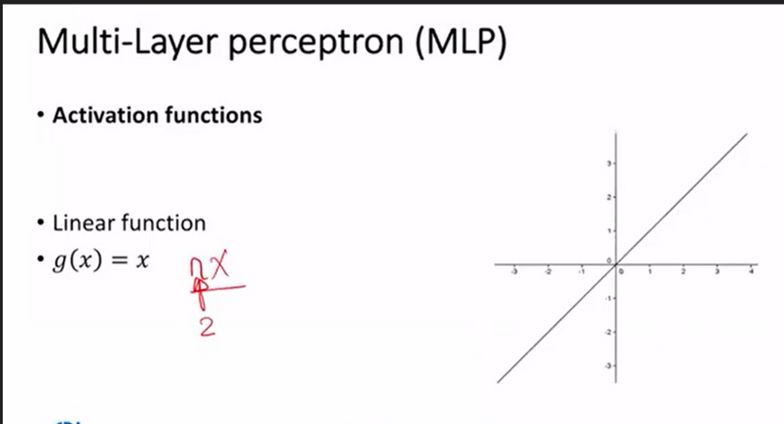
The linear activation function is not commonly used in neural networks. It is a simple function that outputs the input value unchanged. This means that the output of each neuron is simply a linear combination of the inputs. As a result, the network cannot learn any non-linear relationships between the inputs and the outputs.
The linear activation function can be used in some cases, such as when the input data is already in a linear relationship with the output data. However, it is not generally recommended for most neural network applications.
Here are some of the problems with using the linear activation function:
- It cannot learn any non-linear relationships between the inputs and the outputs.
- It is not computationally efficient, as the gradients of the function must be calculated for each update.
- It can lead to the vanishing gradient problem, which can make it difficult for the network to learn.
Overall, the linear activation function is not a good choice for most neural network applications. It is better to use a different activation function, such as the ReLU function, which is more powerful and efficient.
Most Common Activation Functions
Relu
The ReLU function is a non-linear function that outputs the input value if it is positive, and zero otherwise. That's mean if the input is negative, then the output of the neuron will always be zero.
It is computationally efficient and does not suffer from the vanishing gradient problem, but it can lead to the dying ReLU problem.
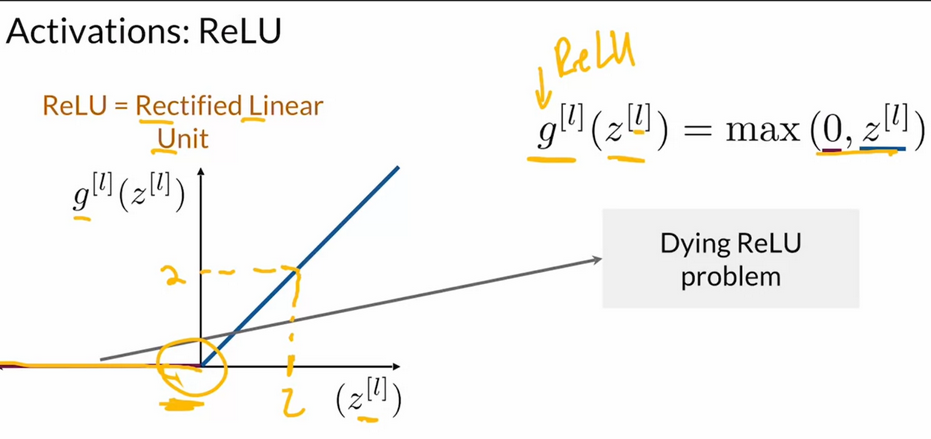
What is Dying Relu Problem?
- It can occur when the weights of neural network are initialized in a way that causes many of the neurons to output zero. This can happen if the weights are initialized to be too small or if the data is not well-scalled.
- When a neuron outputs zero, it will not contribute to the learning process. This can cause the network to become stuck in a local minimum, where it is unable to learn the desired function.
- The dying ReLU problem is more likely to occur in deep neural networks. This is because the ReLU function is applied many times in a deep neural network.
How to Prevent the Dying Relu Problem?
- The dying ReLU problem is a common problem that can occur in neural networks. However, there are a number of ways to prevent it. By following these techniques, you can help to ensure that your neural networks are able to learn effectively.
- Here are some additional things to keep in mind about the dying ReLU problem:
- There are a number of ways to prevent the dying ReLU problem. One way is to initialize the weights of the network carefully. Another way is to use a variant of the ReLU function that outputs a small positive value for negative input values. This is called the leaky ReLU function.
- The dying ReLU problem can be mitigated by using a learning rate that is not too large. A large learning rate can cause the weights of the network to be updated too quickly, which can lead to the dying ReLU problem.
- The dying ReLU problem can also be mitigated by using a regularization technique, such as L2 regularization. L2 regularization helps to prevent the weights of the network from becoming too large, which can help to prevent the dying ReLU problem.
Leaky Relu
The Leaky ReLU function is a variant of the ReLU function that outputs a small positive value for negative input values.
This prevents the dying ReLU problem.
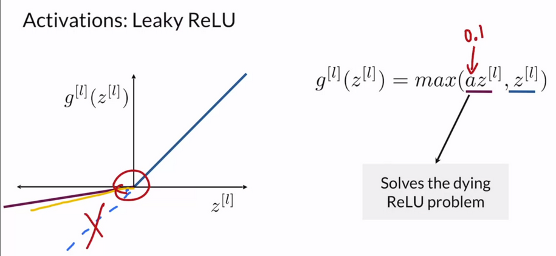
Sigmoid
The sigmoid function is a special activation function because it has a few properties that make it useful for neural networks.
- S-shaped curve: The sigmoid function is a S-shaped curve that outputs a value between 0 and 1. This makes it a good choice for binary classification problems, where the output of the network should be a probability.
- Smooth and continuous: The sigmoid function is smooth and continuous, which makes it easy to differentiate. This is important for the backpropagation algorithm, which is used to update the weights of the network during training.
- Interpretable: The sigmoid function is relatively easy to interpret, which can be helpful for debugging and understanding the behavior of the network.
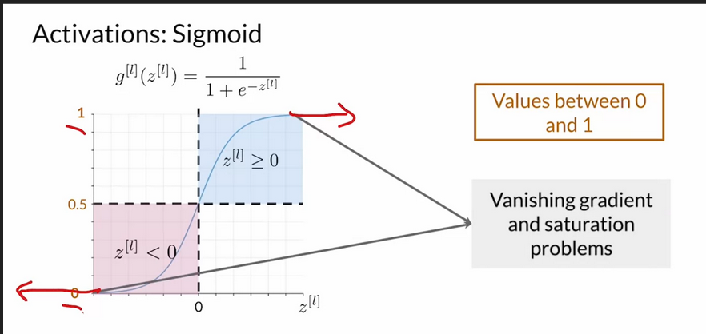
However, the sigmoid function also has some limitations.
- Vanishing gradient problem: The sigmoid function has a derivative that approaches zero as the input approaches 0 or 1. This can make it difficult for the network to learn, as the updates to the weights become very small.
- Sensitive to outliers: The sigmoid function is sensitive to outliers, which can cause the network to make incorrect predictions.
Tanh
The hyperbolic tangent (tanh) function is an activation function that is similar to the sigmoid function, but it has a range of -1 to 1. This makes it a good choice for regression problems, where the output of the network should be a continuous value.
The tanh function is also less sensitive to outliers than the sigmoid function, which makes it a good choice for problems where the data may contain outliers.
Here are some of the reasons why the tanh function is preferred over the sigmoid function:
- Range: The tanh function has a range of -1 to 1, which is suitable for regression problems where the output should be a continuous value. The sigmoid function has a range of 0 to 1, which can be restrictive in some cases.
- Sensitivity to outliers: The tanh function is less sensitive to outliers than the sigmoid function. This is because the tanh function is symmetric around 0, while the sigmoid function is not.
- Smoothness: The tanh function is a smooth function, which makes it easier to train neural networks. The sigmoid function is not as smooth, which can make it more difficult to train neural networks.
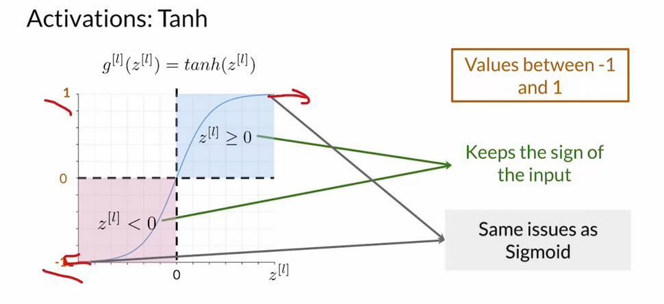
Here are some cases where the tanh function is preferred over the sigmoid function:
- Regression problems: The tanh function is a good choice for regression problems where the output should be a continuous value.
- Problems with outliers: The tanh function is less sensitive to outliers than the sigmoid function, so it is a good choice for problems where the data may contain outliers.
- Problems where smoothness is important: The tanh function is a smooth function, which makes it easier to train neural networks. This is important for problems where the output of the network should be smooth, such as image classification.
However, the tanh function also has some limitations.
- Vanishing gradient problem: The tanh function has a derivative that approaches zero as the input approaches 0 or 1. This can make it difficult for the network to learn, as the updates to the weights become very small.
- Not interpretable: The tanh function is not as interpretable as the sigmoid function. This can make it more difficult to debug and understand the behavior of the network.
SoftMax
The softmax function is a special activation function because it is used in classification problems with multiple output classes. The softmax function takes a vector of real numbers as input and outputs a vector of probabilities, where each probability represents the likelihood of the input belonging to a particular class.
The softmax function is a versatile and useful activation function. It is a good choice for classification problems with multiple output classes.
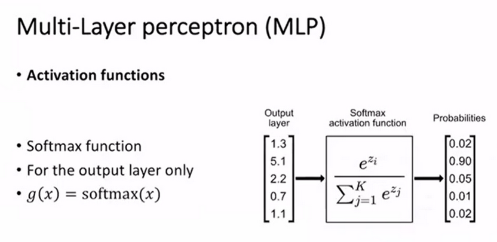
Here are some of the reasons why the softmax function is special:
- Normalization: The softmax function is a normalization function, which means that the sum of the outputs is always equal to 1. This is important for classification problems, where the output should represent the probability of the input belonging to a particular class.
- Non-linearity: The softmax function is a non-linear function, which means that it can learn complex relationships between the input and output data. This is important for classification problems, where the data may not be linearly separable.
- Differentiability: The softmax function is differentiable, which means that it can be used with backpropagation to train neural networks. Backpropagation is an algorithm that is used to update the weights of a neural network based on the error of the network's predictions.
Here are some cases where the softmax function is used:
- Classification problems: The softmax function is used in classification problems with multiple output classes. For example, the softmax function can be used to classify images into different categories, such as cats and dogs.
- Ranking problems: The softmax function can also be used in ranking problems, where the goal is to rank a set of items in order of their importance. For example, the softmax function can be used to rank search results or to rank products on an e-commerce website.
However, the softmax function also has some limitations.
- Vanishing gradient problem: The softmax function can suffer from the vanishing gradient problem, which can make it difficult for the network to learn.
- Not interpretable: The softmax function is not as interpretable as some other activation functions, such as the sigmoid function. This can make it more difficult to debug and understand the behavior of the network.
Why not to use MAX function instead?
Max function is not differentiable!!, that's why they introduced a function represent 'probability and outputs from 0 to 1'.
Absolute
The absolute activation function is a non-linear function that outputs the absolute value of its input. It is defined as follows:
abs(x) = |x|where x is the input to the function.
The absolute activation function is a simple function, but it can be useful in some cases. For example, it can be used to make neural networks more robust to outliers. Outliers are data points that are very different from the rest of the data. When a neural network is trained on data that contains outliers, the absolute activation function can help to prevent the network from being affected by these outliers.
The absolute activation function is also less sensitive to the vanishing gradient problem than some other activation functions, such as the sigmoid function. The vanishing gradient problem is a problem that can occur when the derivatives of the activation function approach zero. This can make it difficult for the network to learn, as the updates to the weights become very small.
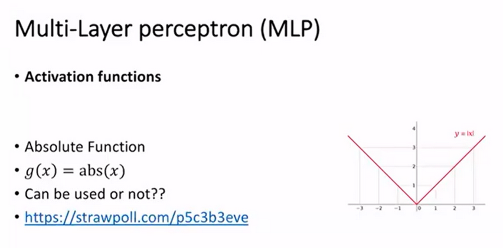
However, the absolute activation function also has some limitations. It is not as interpretable as some other activation functions, such as the sigmoid function. This can make it more difficult to debug and understand the behavior of the network.
Here are some cases where the absolute activation function is used:
- Outlier detection: The absolute activation function can be used to make neural networks more robust to outliers.
- Robust regression: The absolute activation function can be used to improve the robustness of regression models to outliers.
- Image processing: The absolute activation function can be used to remove noise from images.
Can ABS() be used as activation function?
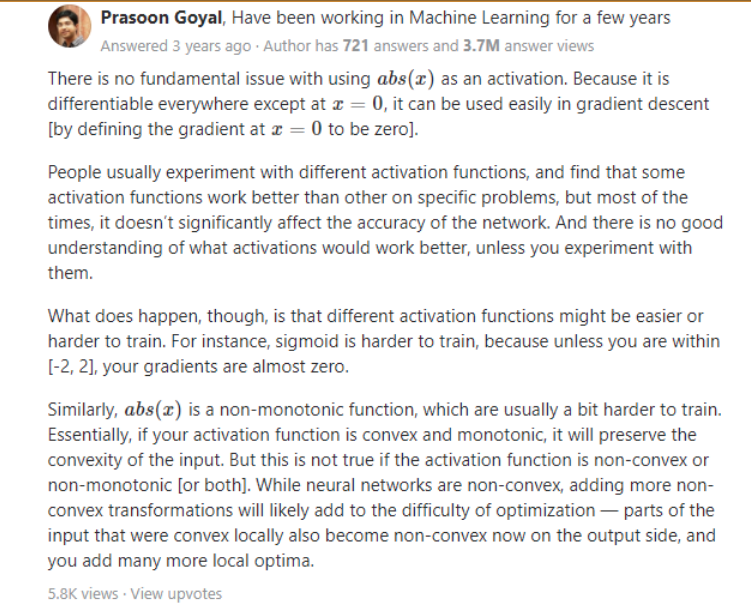
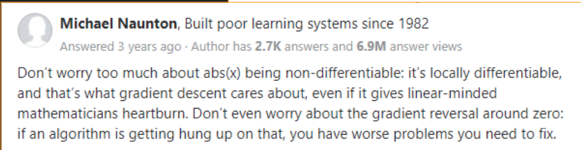
To conclude: If you will use abs(x), adjust your calculation such that, when a zero input is used, add some small fraction to zero to make it differentiable.
Comparison between Activation Functions
| Activation Function | Full Name | Working Principle | Equation | Derivative | Advantages | Disadvantages | Where is commoly uses |
|---|---|---|---|---|---|---|---|
| Sigmoid | Sigmoid function | S-shaped curve that outputs a value between 0 and 1. | sigmoid(x) = 1 / (1 + exp(-x)) | sigmoid'(x) = sigmoid(x) * (1 - sigmoid(x)) | Smooth and easy to interpret | Sensitive to outliers. </br> Slow convergence | Binary classification problems |
| Tanh | Tanh function | Similar to the sigmoid function, but has a range of -1 to 1. | tanh(x) = (exp(x) - exp(-x)) / (exp(x) + exp(-x)) | tanh'(x) = 1 - tanh^2(x) | More symmetrical than the sigmoid function. | Sensitive to outliers. </br> Slow convergence | Binary classification problems |
| ReLU | Rectified Linear Unit (ReLU) | Outputs the input value if it is positive, and zero otherwise. | ReLU(x) = max(0, x) | ReLU'(x) = 1 if x > 0 else 0 | Computationally efficient and does not suffer from the vanishing gradient problem. | Can lead to the dying ReLU problem. | Regression problems, image classification, natural language processing |
| Leaky ReLU | Leaky Rectified Linear Unit (Leaky ReLU) | Variant of the ReLU function that outputs a small positive value for negative input values. | LeakyReLU(x) = max(0.01x, x) | LeakyReLU'(x) = 0.01 if x < 0 else 1 | Prevents the dying ReLU problem. | Gradients can still vanish for very large negative values. | Regression problems, image classification, natural language processing |
| ELU | Exponential Linear Unit (ELU) | Variant of the ReLU function that outputs a negative exponential value for negative input values. | ELU(x) = x * (1 - exp(-x)) | ELU'(x) = 1 - exp(-x) if x >= 0 else x * exp(-x) | Improves the performance of the network in certain cases. | Gradients can still vanish for very large negative values. </br> Not suitable for regression problems | Image classification, natural language processing |
| Softmax | Softmax function | Normalization function that outputs a vector of probabilities. | Softmax(x) = exp(x) / sum(exp(x)) | Softmax'(x) = Softmax(x) * (1 - Softmax(x)) | Used in classification problems with multiple output classes. | Not suitable for regression problems. </br> Not suitable for regression problems | Classification problems with multiple output classes |
Activation Function must be differentiable ?
As we used chain rule, so during calculating the G.D to minimize the error, an differentiation is required, which mean we will need to differentiate the Activation function as well.
Which Activation Function should we use?
For Output Laysers: Depends on the task whether it is classification or regression.
- Regression:
- Linear: no limits on the output.
- Relu: Output is positive.
- Sigmoid: Output between 0 & 1.
- Tanh: Output between -1 & 1.
- Classification: (Probability of class)
- Binary Classifier: Sigmoid.
- Multi-Class Classifier: SoftMax.
The PERCEPTRION ERROR
Gradient in Neural Network
1- What is a Gradient?
A gradient is the direction of greatest change in a function. It is a vector that points in the direction of the steepest ascent of the function. The gradient can be calculated using calculus, and it is used in many machine learning algorithms, such as gradient descent.
In machine learning, the gradient is used to update the weights of a neural network. The gradient of the loss function with respect to the weights is calculated, and the weights are updated in the direction of the negative gradient. This means that the weights are updated in the direction that minimizes the loss function.
The gradient can also be used to visualize the shape of a function. By plotting the gradient of a function, we can see the direction of greatest change in the function. This can be helpful for understanding the behavior of the function.
Here are some of the applications of gradients:
- Gradient descent: Gradient descent is an optimization algorithm that uses the gradient of a function to update the parameters of the function.
- Neural networks: Gradients are used to update the weights of a neural network.
- Machine learning: Gradients are used in many machine learning algorithms, such as support vector machines and logistic regression.
-Natural language processing: Gradients are used in natural language processing tasks, such as sentiment analysis and machine translation. -Computer vision: Gradients are used in computer vision tasks, such as object detection and image classification.
3- What is Gradient Descend?
Gradient descent is an optimization algorithm used in machine learning to find the minimum of a function. It works by iteratively moving in the direction of the negative gradient of the function, which is the direction of steepest descent.
The gradient of a function is a vector that points in the direction of the greatest increase of the function. The negative gradient points in the direction of the greatest decrease of the function.
Gradient descent is a simple algorithm, but it can be very effective in finding the minimum of a function. It is often used in neural networks to train the weights of the network.
3.1- How does it works?
Here is an example of how gradient descent works:
Let's say we have a function f(x) that we want to minimize. We can start with an initial guess for the value of x, and then use gradient descent to update our guess.
The first step is to calculate the gradient of f(x) at our current guess. The gradient tells us the direction of steepest descent, so we can update our guess by moving in the opposite direction of the gradient.
We can then repeat this process, updating our guess each time in the direction of the negative gradient. This process will eventually converge to the minimum of the function.
Gradient descent is a powerful algorithm, but it can be slow to converge. There are a number of variations of gradient descent that can be used to speed up convergence.
3.2- Common types of Gradient Descent
Here are some of the most common variations of gradient descent:
- Stochastic gradient descent: Stochastic gradient descent uses a single data point to update the weights of the network at each iteration. This can be more efficient than batch gradient descent, but it can also be less accurate.
- Mini-batch gradient descent: Mini-batch gradient descent uses a small batch of data points to update the weights of the network at each iteration. This can be more efficient than stochastic gradient descent, but it can also be more accurate.
- Momentum: Momentum is a technique that can be used to accelerate the convergence of gradient descent. It works by adding a weighted average of the previous gradients to the current gradient.
- Adagrad: Adagrad is a technique that can be used to prevent the gradients from becoming too small. It works by adjusting the learning rate based on the magnitude of the gradients.
- RMSprop: RMSprop is a technique that is similar to Adagrad, but it is more efficient. It works by averaging the squared gradients over time.
Vanishing/Exploding Gradient
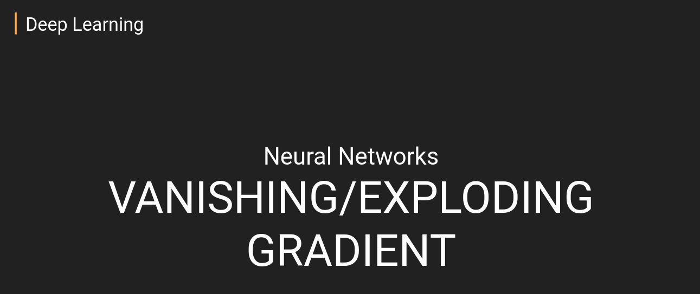
The vanishing gradient and exploding gradient problems are two common problems that can occur in neural networks. The vanishing gradient problem occurs when the gradients of the activation function become very small as the network learns. This can make it difficult for the network to learn, as the updates to the weights become very small.
The exploding gradient problem occurs when the gradients of the activation function become very large as the network learns. This can cause the network to become unstable, and the weights can become very large or very small.
1.1.1- Vanishing Gradient Problem
The vanishing gradient problem occurs when the derivative of the activation function approaches zero as the input approaches a certain value. This can happen with activation functions that have a narrow range of output values, such as the sigmoid function.
The vanishing gradient problem can make it difficult for the network to learn because the updates to the weights become very small. This is because the gradients are used to determine how much the weights should be updated, and if the gradients are very small, the updates will be very small as well. This can make it difficult for the network to make significant changes to its predictions, and it can prevent the network from learning.
The vanishing gradient problem is most likely to occur in deep neural networks with many layers. This is because the gradients are multiplied by the derivative of the activation function at each layer, and if the derivative of the activation function approaches zero, the gradients will become very small very quickly.
1.1.2- Solutions to Vanishing Gradient Problem
There are a number of solutions to the vanishing gradient problem.
- Using different activation function such as the ReLU function. The ReLU function has a non-zero derivative for all positive values, so it does not suffer from the vanishing gradient problem.
- Weights Initialization: The weights should be initialized in a way that ensures that the gradients do not become too small.
- Decreasing the learning rate: The learning rate is the step size that is used to update the weights of the network. If the learning rate is too large, the gradients can become too small.
1.2.1- Exploding Gradient Problem
The exploding gradient problem occurs when the derivative of the activation function approaches infinity as the input approaches a certain value. This can happen with activation functions that have a wide range of output values, such as the ReLU function.
The exploding gradient problem can make the network unstable because the updates to the weights can become very large. This is because the gradients are used to determine how much the weights should be updated, and if the gradients are very large, the updates will be very large as well. This can cause the network to make sudden and unpredictable changes to its predictions, and it can prevent the network from learning.
The exploding gradient problem is most likely to occur in deep neural networks with many layers. This is because the gradients are multiplied by the derivative of the activation function at each layer, and if the derivative of the activation function approaches infinity, the gradients will become very large very quickly.
1.2.2- Solutions to Exploding Gradient Problem
There are a number of solutions to the exploding gradient problem.
- Using a different activation function: Such as the tanh function. The tanh function has a derivative that is bounded between -1 and 1, so it does not suffer from the exploding gradient problem.
- Gradient Clipping: Clipping the gradients means that the gradients are limited to a certain range. This can help to prevent the gradients from becoming too large.
- Decreasing the learning rate: The learning rate is the step size that is used to update the weights of the network. If the learning rate is too small, the gradients will not become too large.
1.3- Common Solution for Both [Vanishing/Exploding] Gradient
- Batch Normalization: It occurs after the activation function.
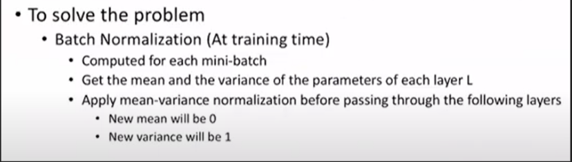
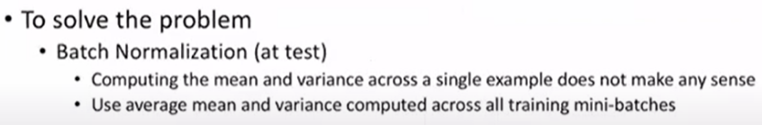
- Note: We can't use normalizer paramters of the test set, and instead we use the parameters of the training set, As if we use the test set normalizer parameters, there will be Data Leakage.
- Weight Initialization:
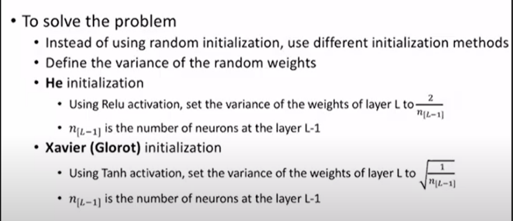
1.4- Summary
Here is a table that summarizes the key differences between the two problems:
| Problem | Description |
|---|---|
| Vanishing Gradient Problem | The gradients of the activation function become very small as the network learns. |
| Exploding Gradient Problem | The gradients of the activation function become very large as the network learns. |
| Direction of Gradients | Gradients become smaller and smaller. |
| Effect on Learning | Makes it difficult for the network to learn. |
2- Vanishing/Exploding Gradient in NN
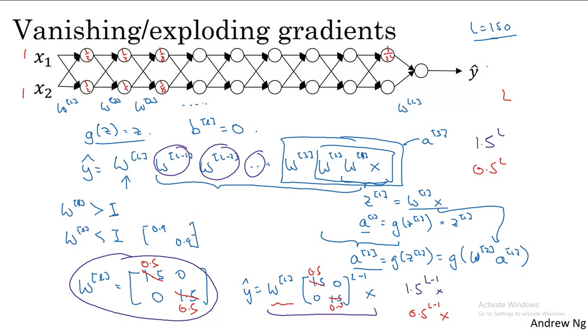
If we start with weights so large, so y-pred will have total of large value due to weight multiplication. Same if we start with weights so small. This will lead us to Exploding and vanishing of gradient respectively .
Weights Initialization In NN
Notes
Initialize the weights and biases to be zero:
- Each neuron in the first hidden layer will perform the same computation. So even after multiple iterations of gradient descent each neuron in the layer will be computing the same thing as other neurons.
- Can't break the similarity.
[True/False] Logistic regression weights w should be initialized randomly rather than to all zeros, because if you initialize to all zeros, then logistic regression will fail to learn a useful decision boundary because it will fail to “break symmetry”.
- False!!! As: Logistic Regression doesn't have a hidden layer. If you initialize the weights to zeros, the first example x fed in the logistic regression will output zero but the derivatives of the Logistic Regression depend on the input x (because there's no hidden layer) which is not zero. So at the second iteration, the weights values follow x's distribution and are different from each other if x is not a constant vector.
[What will happen?] You have built a network using the tanh activation for all the hidden units. You initialize the weights to relative large values, using np.random.randn(..,..)*1000.
- This will cause the inputs of the tanh to also be very large, thus causing gradients to be close to zero. The optimization algorithm will thus become slow.
Regularization
Normalization
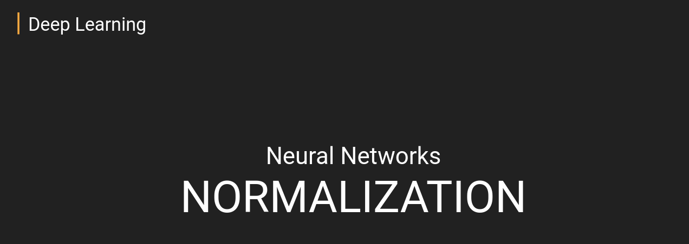
Parameters Initialization
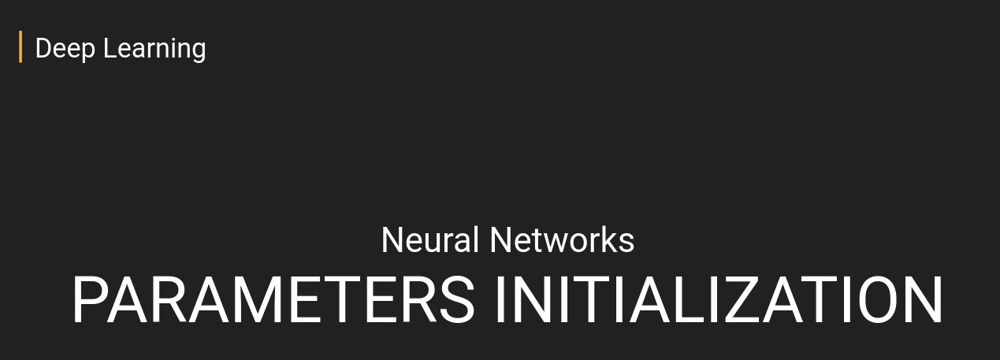
Gradient Checking
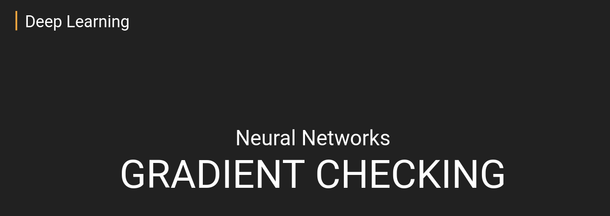
Optimizers
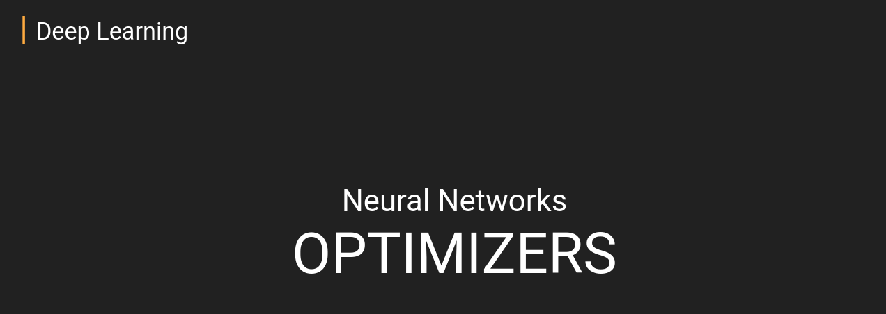
Mini-Batch
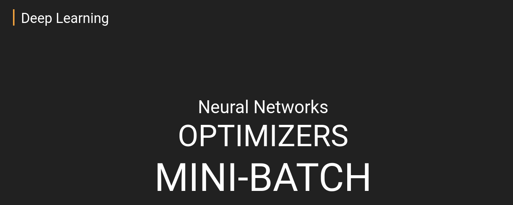
Exponential Weighted Average
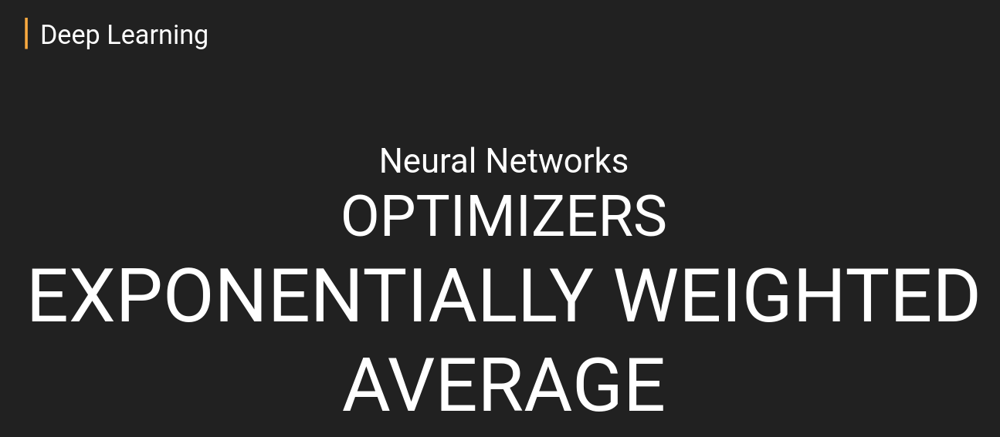
Momentum GD
RMSPROP GD
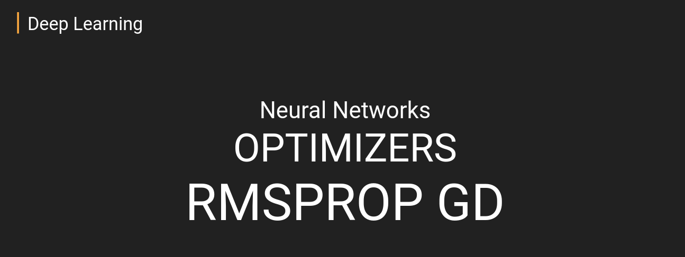
ADAM
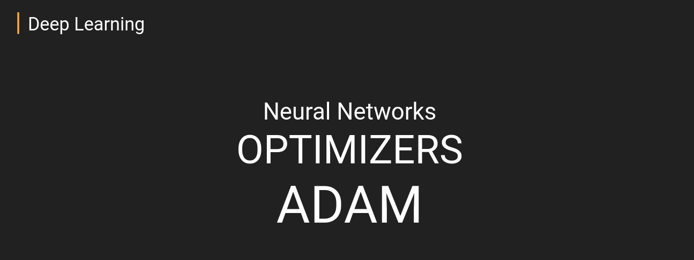
Learning Rate
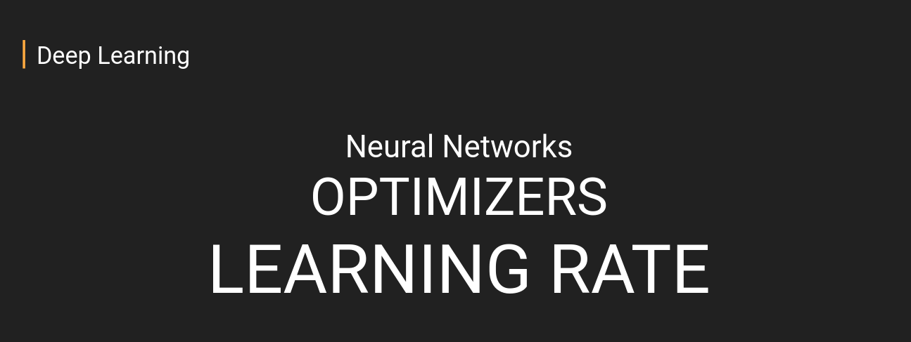
ADAGRAD
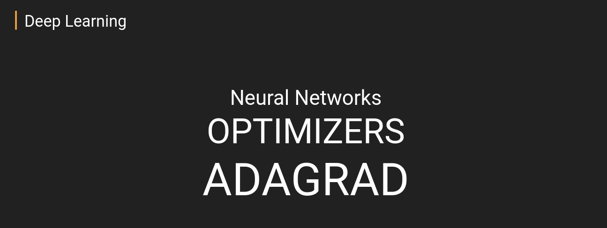
Local Minima
Transfer Learning
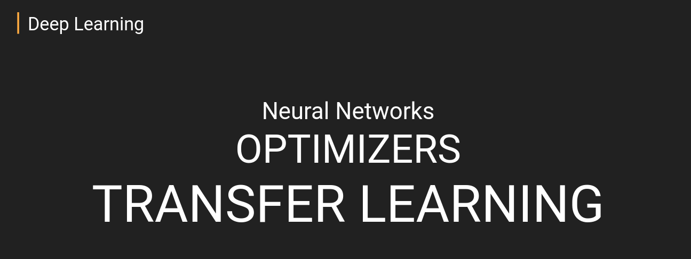
Hyper-Parameters Tuning
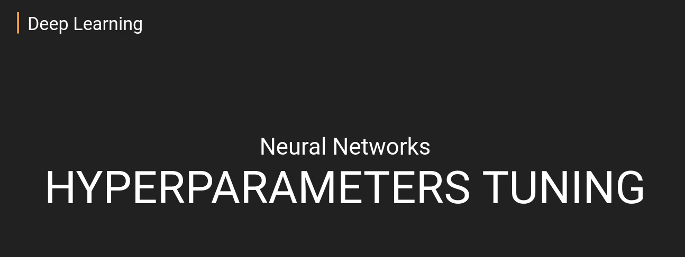
Batch Normalization
Multi-Class Classification
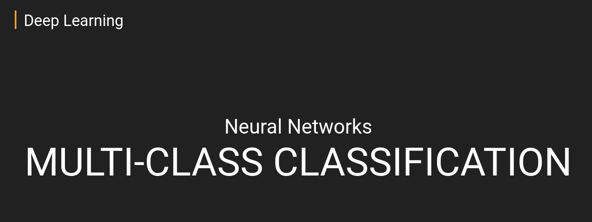
BIAS - Variance
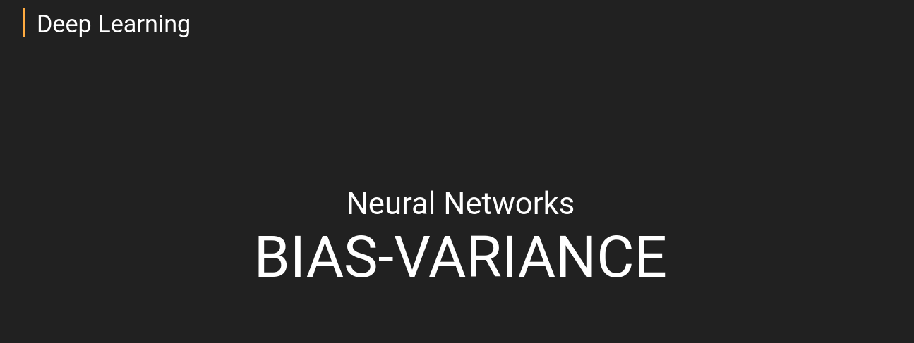
Single Number Evaluation Metric
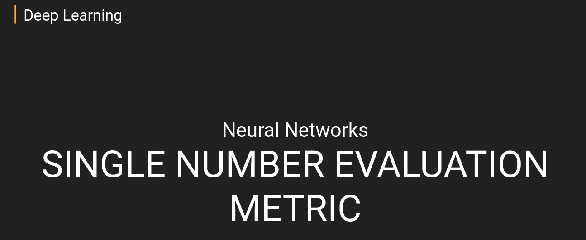
Avoidable Bias
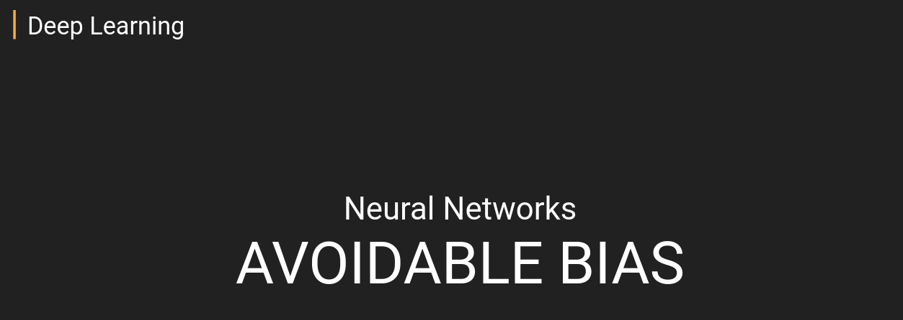
Error Analysis
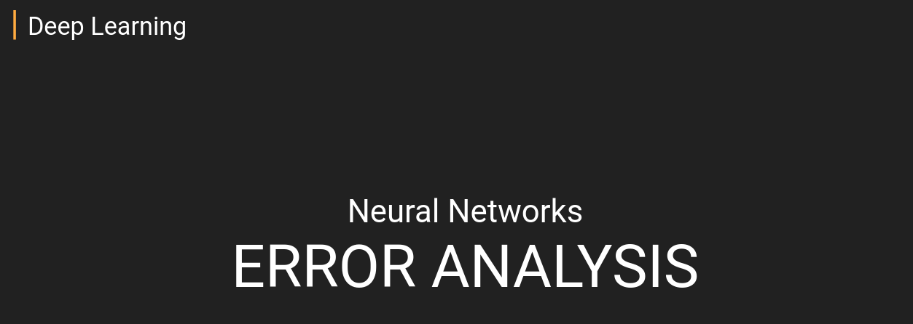
Tip: Build your system quickly then iterate.
Mismatched Training & Dev/Test Sets
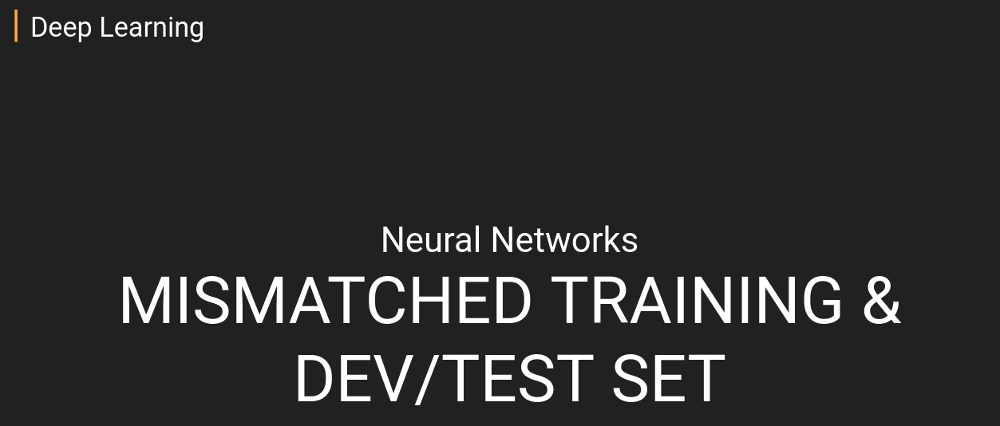
Learning From Multiple Tasks
End-To-End Deep Learning
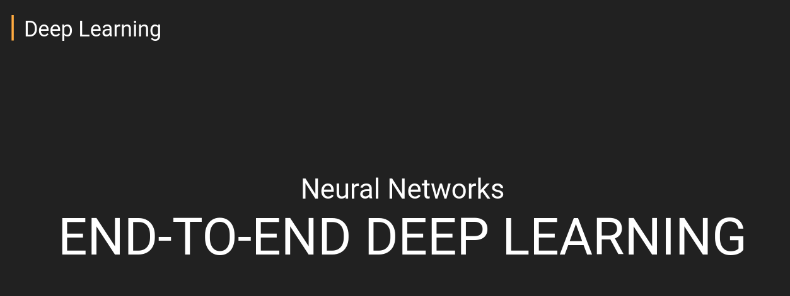
End-to_end deep leanring is a techinque where a single neural network trained to perform a task directly from the input data, without any manual feature extraction. This is in contrast to traditional machine learning approaches , which typically involve manually extraction features from the input data and then training a seperate machine learning model on those features.
Compared to a multiple stage approach, where there are more than one stage, and each stage takes an input and result to an output which is the input to the next stage. This is similir to mappping and input X to a final output Y.
Briefly, there have been some data processing systems, or learning systems that require multiple stages of processing. And what end-to-end deep learning does, is it can take all those multiple stages, and replace it usually with just a single neural network.
End-to-end deep learning has been used to achieve state-of-art results on wide range of tasks, including image recognition, natural language processing, and speech recognition.
Face Recognition as end-to-end approach
We could create a single neaural network to be able to detect the input image and output the identity of the people in the images, which is called a signle stage approach.
Alternatively, We could uses a two stage approach, where the first stage is face detection for the input image, and extract that face, then pass this output face detected into a second stage which is face recognition, where the detected face is comapred with a predefined database of labeld faces vectores and measure the similarity between these two faces.
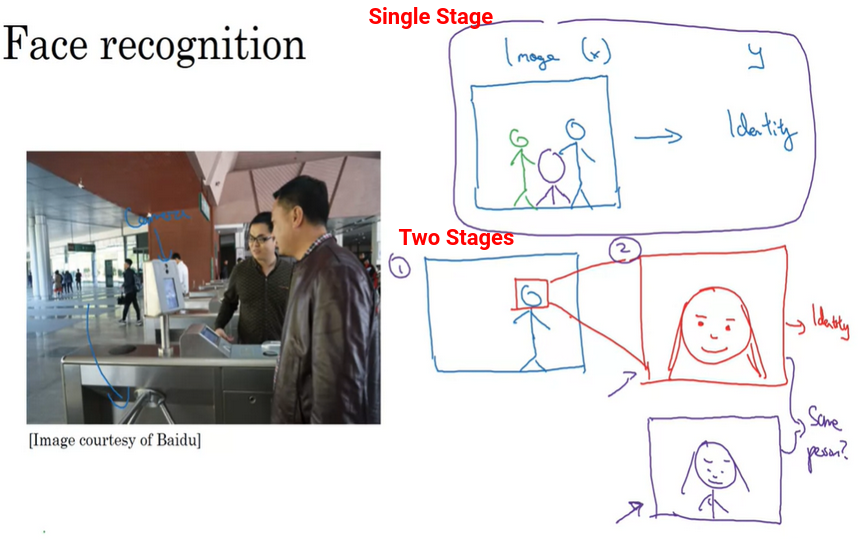
Two reasons for why two stages NN is better than one stage NN to determine Identity of employee:
- Each of two problem you’re solving is much simpler (one to detect faces, second to determine employee).
- You have a lot of data compared for each stage bigger than one stage.
A Question Here: Do you have the sufficient data to learn a function of the complexity needed to map x to y?
Credits
- Deep Learning Specialization By Andrew NG in Coursera